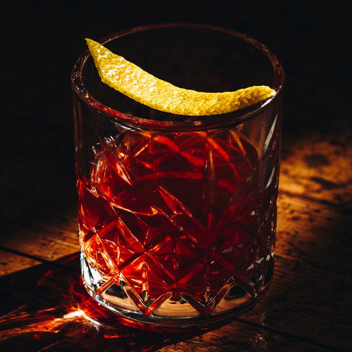

Sazerac

Ingredients
- 50 ml Cognac
- 10 ml Absinthe
- 1 Sugar Cube
- 2 Dashes Peychaud's Bitters
Method
- Rinse a chilled old-fashioned glass with the absinthe,
add crushed ice and set it aside.
- Stir the remaining
ingredients over ice in a mixing glass.
- Discard the ice and any excess absinthe from the prepared glass,
strain the mixed drink into the glass.